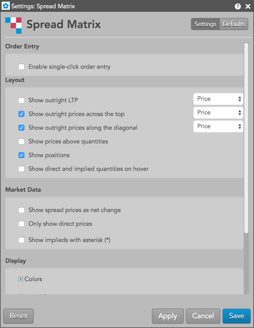
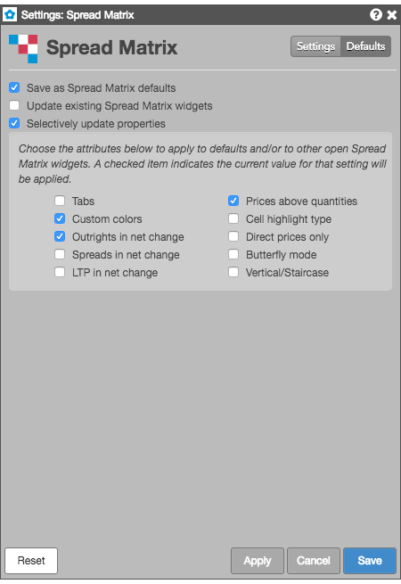

Context menu options
Right-click in the Spread Matrix to open the context menu. On this menu, you can select the following options:
- Choose legs — Gives you the ability to check/uncheck each available contract month for the product. After checking specific contract months, right-click again and click Save legs.
- Refresh instruments — Re-downloads instrument defintions for all instruments in the grid. You typically need to use this option only if the instrument details, such as ticking size, changed since you started the Trade application.
- Save legs — Gives you the ability to display each contract month that you've selected (checked) for that product. When you click Save legs, the checkboxes disappear and the selected contracts remain in the matrix.
- Show/hide — Shows/hides the following:
- The arrow pad used for navigating through the matrix. The pad is shown by default.
- The panel containing the Butterfly, Vertical, and Cancel buttons. The button panel is shown by default.
- The Cancel All, Cancel Spreads, and Cancel Outrights buttons. These order cancel buttons are
shown by default.
-
An MD Trader inside the Spread Matrix. The ladder dynamically adjusts to show the market for the selected contract or spread. The MD Trader is hidden by default.
- Switch to staircase/vertical layout — Toggles between staircase and vertical orientations for viewing market data and positions for outrights and spreads in the matrix.
- Open... — When you right-click a contract month, you can open an MD Trader, Order Ticket, Chart, or Time and Sales widget.
- Zoom... — Opens a slider control that you can use to scale the size of the Spread Matrix display.
- Settings: Spread Matrix — Opens the local settings menu.
Available settings
These settings affect only the selected Spread Matrix widget. To update the default settings with these value for newly-opened Spread Matrix widgets, or to apply them to existing opened widgets, click Defaults.

{% include settings/sm-settings.html %}
Selective defaults
Spread Matrix lets you select individual customizations to save as default Spread Matrix settings and to update existing Spread Matrix widgets, while applying other customizations the current widget. Checking either of the Save as Spread Matrix defaults or Updating existing Spread Matrix widgets settings enables the Selectively update properties setting. You can choose the individual widget attributes to you want to save.
